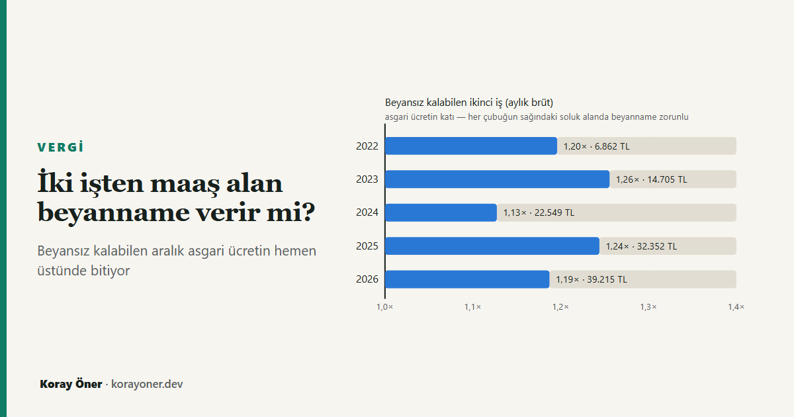

Kısa cevap
Tevkif yoluyla vergilendirilmiş ücretler kural olarak beyan edilmez. İki durumda bu kural bozulur (GVK m.86/1-b):
- Birinci saydığınız işveren dışındaki ücretlerin safi toplamı, tarifenin ikinci dilim tutarını aşarsa — 2026'da 400.000 TL;
- ya da bütün ücretlerin safi toplamı, tarifenin dördüncü dilim tutarını aşarsa — 2026'da 5.300.000 TL.
Aşılırsa ücretlerin tamamı beyan edilir. Aşılmazsa yıl içinde kesilen vergi nihaidir ve beyanname verilmez — asıl fark buradan çıkıyor.
Sınır brüt ücret değil
En sık yapılan hata, sınırı bordrodaki brüt ücretle karşılaştırmak. Kanun ücretin safi tutarını esas alıyor: gayrisafi ücretten GVK m.63'teki indirimler — SGK ve işsizlik sigortası primi işçi payı — düşüldükten sonra kalan tutar. Gelir İdaresi'nin kendi rehberindeki örnek bunu açıkça yapıyor: 480.000 TL'lik ikinci işveren ücretinden %15 düşülüp 408.000 TL ile karşılaştırılıyor, 480.000 TL ile değil.
2026'da kesinti oranı %15 olduğu için 400.000 TL'lik safi sınır, aylık 39.215 TL brüt ücrete denk geliyor. Bir lira fazlası — aylık 39.216 TL — yıllık safi tutarı 400.003 TL'ye çıkarıyor ve sınır aşılıyor.
Beyansız kalınabilen aralık ne kadar geniş?
Dar. İkinci işin beyanname doğurmaması için iki koşulu birden sağlaması gerekiyor: asgari ücretin altına düşmemesi (aşağıda kalırsa bu yazının kapsamı dışında, kısmi süreli çalışma hesabı gerekir) ve safi tutarının sınırı aşmaması. Bu iki koşul arasındaki aralık, mevcut istisna rejiminin yürürlükte olduğu beş yılın hepsinde asgari ücretin bir ilâ bir buçuk katı arasında kaldı.
| Yıl | Asgari ücret | Beyansız kalan en yüksek ikinci iş | Asgari ücretin katı | Sınır (safi, yıllık) | Toplam sınırı (safi, yıllık) |
|---|---|---|---|---|---|
| 2022 | 5.738 | 6.862 | 1,20 | 70.000 | 880.000 |
| 2023 | 11.711 | 14.705 | 1,26 | 150.000 | 1.900.000 |
| 2024 | 20.003 | 22.549 | 1,13 | 230.000 | 3.000.000 |
| 2025 | 26.006 | 32.352 | 1,24 | 330.000 | 4.300.000 |
| 2026 | 33.030 | 39.215 | 1,19 | 400.000 | 5.300.000 |
Tablonun söylediği şey şu: ikinci iş asgari ücretliyse sorun yok, ama asgari ücretin yaklaşık beşte bir üstüne çıktığı anda beyanname yükümlülüğü doğuyor. Ve bu bir daralma eğilimi değil — 2022'den bu yana oran 1,13 ile 1,26 arasında gidip geliyor, yönü yok. Aralık dar kaldı.
Bir sonuç daha çıkıyor: 2026'da asgari ücretin yıllık safi tutarı 336.906 TL. İki tane asgari ücretli ek iş 673.812 TL eder ve 400.000 TL'lik sınırı rahatça aşar. Yani asgari ücretin altına düşmeyen üç işi olan herkes beyanname vermek zorunda — ve bu, tablodaki beş yılın hepsinde böyle.
Bir lira ve 37.500 lira
Sınırın hemen altıyla hemen üstü arasındaki fark, gelirdeki farkla orantılı değil. Altında kalırsanız yıl içinde kesilen vergi nihai olur. Üstüne çıkarsanız ücretlerin tamamı beyan edilir ve yıl boyunca iki ayrı bordroda ayrı ayrı uygulanan tarifeden doğan bütün eksik vergi bir anda ödenir.
| Birinci işin aylık brütü | Birleşik marjinal oran | Doğan vergi borcu | Formül birebir tutuyor mu? |
|---|---|---|---|
| 33.030 | %27 | 33.083 TL | Hayır, iki banda yayılıyor |
| 60.000 | %27 | 37.500 TL | Evet |
| 150.000 | %35 | 69.500 TL | Evet |
| 250.000 | %35 | 69.500 TL | Evet |
Tablodaki tutarlar tam bordro benzetimiyle hesaplandı, ama kapalı bir biçimleri de var:
borç = sınır × birleşik marjinal oran − tarifenin sınıra kadar olan vergisi
2026'da tarifenin 400.000 TL'ye kadar olan vergisi 70.500 TL. Birleşik marjinal oranı %27 olan biri için borç 400.000 × 0,27 − 70.500 = 37.500 TL oluyor. Bu, ikinci işin tarifeyi sıfırdan başlatarak kazandığı avantajın tam olarak geri alınması.
Formül, sınır kadarlık dilim tek bir banda düştüğünde kuruşuna kadar tutuyor. Tablonun ilk satırında tutmuyor: birinci iş asgari ücretliyken 400.000 TL'lik dilim %20 ile %27 bandına yayılıyor ve borç 33.083 TL'de kalıyor. Uçurum orada da var, yalnızca daha sığ.
Uçurumun bir üst sınırı var ve bu iki eşiğin birbirine girmesinden çıkıyor. Tarifenin en üst bandı (%40) dördüncü dilimin — yani 5.300.000 TL'nin — üstünde başlıyor. Birleşik matrahı o banda ulaşan bir ücretlinin ücret toplamı zaten 5.300.000 TL'yi aşmış olur ve ikinci ölçüt devreye girer: beyanname her hâlükârda zorunludur.
Yani %40 bandında uçurum diye bir şey yok; o ücretli seçim yapmıyor, zaten beyan ediyor. Uçurum yalnızca %27 ve %35 bantlarında var.
Neden böyle: tarife her işverende sıfırdan başlıyor
Her işveren kümülatif matrahı kendi bordrosunda tutar ve tarifeyi sıfırdan uygular. İki işten toplam aynı parayı kazanan biri, yıl içinde tek işten kazanandan daha az vergi ödemiş olur — çünkü ikinci ücret, birincinin üstüne binmek yerine tarifenin en alt basamağından başlar. Beyanname bu farkı geri alır.
| Aylık brütler | İkinci işin safi tutarı | Beyan | Yıl içinde kesilen | Beyannamede ödenecek | Toplam vergi | Tek işverende olsaydı |
|---|---|---|---|---|---|---|
| 100.000 + 35.000 | 357.000 | Yok | 241.919 | 0 | 241.919 | 276.409 |
| 100.000 + 39.000 | 397.800 | Yok | 250.079 | 0 | 250.079 | 287.425 |
| 100.000 + 45.000 | 459.000 | Var | 266.449 | 37.500 | 303.949 | 303.949 |
| 60.000 + 40.000 | 408.000 | Var | 142.519 | 37.500 | 180.019 | 180.019 |
Tablonun son iki sütunu karşılaştırıldığında görünen şey şu: beyanname verildiğinde iki işverenli çalışanın toplam vergisi, aynı parayı tek işverenden alan çalışanınkine tam olarak eşitleniyor. Fark sıfır. Yani beyannamenin kendisi bir ceza değil, bir düzeltme; avantajın tamamı beyanname vermemekten geliyor. Sınırın bu kadar keskin olmasının sebebi de bu.
İstisna bir kez uygulanıyor
Asgari ücret istisnasını yalnızca en yüksek ücretin ödendiği işveren uygular (GVK m.23/1-18; 319 seri no.lu Tebliğ m.7). İkinci işveren ne gelir vergisi istisnasını ne de damga vergisi istisnasını uygular. İki bordroda birden uygulanması hatalı kesintidir ve farkın geri istenmesine yol açar.
Beyanname verilirse istisna beyannameye dahil edilmez. Bunun yerine, ücretlerin toplamı üzerinden hesaplanan vergiden "yıl içinde istisna öncesi hesaplanan vergiler" mahsup edilir (319 seri no.lu Tebliğ m.9). Kesilen vergi değil, kesilmeden önce hesaplanan vergi.
Bu ayrım istisnayı korur: sonuç, toplam matraha tarifenin bir kez uygulanıp asgari ücret istisnasının bir kez düşülmesine denk gelir. Yazının hesap modülü bunu her örnek için ayrıca doğruluyor.
"Birinci işvereni siz seçersiniz" — ne zaman işe yarıyor?
Hangi işverenin birinci sayılacağını ücretli serbestçe belirler. Toplamı küçültmek için hariç tutulması gereken, doğal olarak en yüksek ücrettir. Bu tavsiye doğru, ama kapsamı çoğu yerde yazıldığından dar:
- İki işi olan için belirleyici. Aylık 100.000 ve 35.000 TL brüt alan biri, büyük olanı hariç tutarsa 357.000 TL ile sınırın altında kalır ve beyanname vermez; küçük olanı hariç tutarsa 1.020.000 TL ile sınırı aşar ve bütün ücretleri beyan eder.
- Üç veya daha fazla işi olan için pratikte etkisiz. Hepsi asgari ücretin üstündeyse, hariç tutulmayan ikisinin toplamı zaten sınırı aşıyor. Hangi işverenin birinci sayıldığı sonucu değiştirmiyor.
Yöntem ve sınırlar
Bütün tutarlar sitenin bordro motoruyla, ay ay kümülatif matrah takip edilerek hesaplandı; hiçbiri elle yazılmadı. Beyan sınırları da elle yazılmıyor — kanun "tarifenin ikinci/dördüncü gelir diliminde yer alan tutar" dediği için modül tarifeden o dilimi okuyor. 2027 tarifesi girildiğinde tablolar kendiliğinden doğru sınırı gösterecek.
Kapsam kasıtlı olarak dar tutuldu. Her işin ayın tamamında ve asgari ücretin altına düşmeyen bir brütle çalışıldığı varsayılıyor. Asgari ücretin altındaki brütlerde prime esas kazanç tabana çekildiği için bu hesap kısmi süreli çalışmayı temsil etmez; modül böyle bir girdiyi kabul etmek yerine hata veriyor. Tek işverenle karşılaştırmalarda toplam brütün SGK tavanını aşmadığı ayrıca denetleniyor: aşarsa fark artık tarifeden değil primden gelir ve karşılaştırma yanıltır.
Yazı vergi danışmanlığı değil. Beyanname yükümlülüğü, burada ele alınmayan gelir unsurlarından (kira, menkul sermaye iradi, diğer kazançlar) da doğabilir.
Kaynaklar
- 193 sayılı Gelir Vergisi Kanunu, m.86/1-b (beyan sınırı), m.63 (safi tutar), m.23/1-18 (asgari ücret istisnası), m.103 (tarife).
- 319 seri no.lu Gelir Vergisi Genel Tebliği, m.7 (istisnayı en yüksek ücretin işvereni uygular) ve m.9 (beyannamede istisna öncesi hesaplanan vergilerin mahsubu).
- Gelir İdaresi Başkanlığı, Ücret Geliri Elde Edenler İçin Vergi Rehberi — safi tutar üzerinden karşılaştırma örneği ve yıllara göre sınır tutarları.
Sık sorulan sorular
İki işverenden maaş alan beyanname vermek zorunda mı?
Şart değil. Birinci saydığınız işveren dışındaki ücretlerin safi toplamı 2026 için 400.000 TL'yi aşmıyorsa ve bütün ücretlerin safi toplamı 5.300.000 TL'yi aşmıyorsa beyanname verilmez. İkisinden biri aşılırsa birinci işverenden alınan dahil ücretlerin tamamı beyan edilir.
400.000 TL brüt ücret mi?
Hayır, safi tutar. Gayrisafi ücretten SGK ve işsizlik sigortası primi işçi payı düşüldükten sonra kalan tutar karşılaştırılıyor. 2026'da bu kesinti %15 olduğu için sınır, aylık 39.215 TL brüt ücrete denk geliyor.
Sınırı biraz aşmak ne kadara mal olur?
Çok. Birleşik marjinal oranı %27 olan bir ücretli için 37.500 TL, %35 için 69.500 TL. Gelirdeki artış bir lira olabilir; vergideki artış beş haneli. Tarifenin en üst bandında uçurum yoktur, çünkü oraya ulaşan ücret toplamı dördüncü dilimi de aşar ve beyanname zaten zorunlu hale gelir.
İkinci iş asgari ücretliyse sorun olur mu?
Tek başına hayır: 2026'da asgari ücretin yıllık safi tutarı 336.906 TL ve sınırın altında. Ama iki tane asgari ücretli ek iş 673.812 TL eder ve sınırı aşar. Asgari ücretin altına düşmeyen üç işi olan herkes beyanname vermek zorunda.
Asgari ücret istisnası iki işverende birden uygulanır mı?
Hayır. İstisnayı yalnızca en yüksek ücretin ödendiği işveren uygular. İkinci işveren ne gelir vergisi ne damga vergisi istisnasını uygular.
İlgili araçlar ve yazılar
- Maaş hesaplama — brütten nete, ay ay kümülatif matrahla.
- Dilim kayması gerçekten oluyor mu? — beyan sınırı olan ikinci dilim, ücretliler için bağlayıcı olan eşiğin ta kendisi.
- Vergi dilimleri ve asgari ücret — eşiklerin asgari ücret karşısındaki seyri.
- Stopaj nasıl hesaplanır?